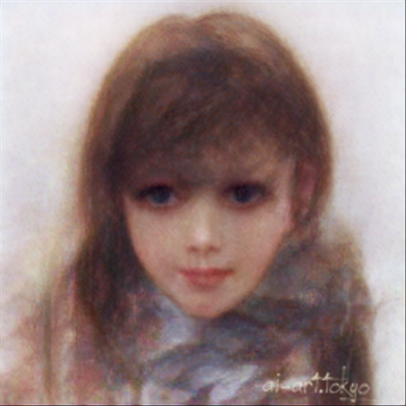
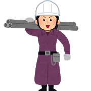
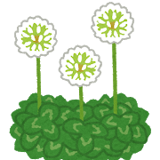
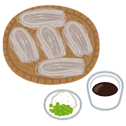
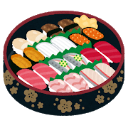
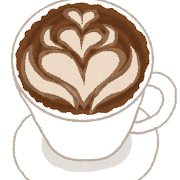

Sakino Kuraoka

ボードゲームが好きです。人狼やテーブルトークゲームもたまにやります。
最近はキャット＆チョコレートというカードゲームにはまっています。
趣味は料理です。
サーモンアボカド丼、オムライス、グラタン、餃子etc
SKILL
JAVA
現在勉強中です。きついです。
基本情報技術者
高校の時に取得 ❕きつかった。
情報処理検定
高校の時に取得 ❕初めてパソコン系で取得した思い出。
ビジネス文書実務検定
高校の時に取得 ❕楽しかった思い出。
GAME

MINECRAFT
友達とお家作ってます。
APEX
高校生の時やってたんですが最近また始めました。
COD3
中学生の時やりこんでました。
スプラトゥーン１・２
中高時代にやってました。好きな武器はシャープマーカーです。
ドラゴンクエストV
FFじゃなくドラクエ派です。

ピクミン
神ゲー。小学生の時よくやってました。
FOOD

霧の下
札駅エスタにあるお蕎麦屋さん。安くておいしい。おすすめはざるそば。

四季彩亭
こちらもエスタにあるお寿司屋さん。回転ずしよりは高いけど回らないお寿司よりは安い、でもおいしい。
おすすめはホタテ、すじこ醤油、サーモン・・・全部❕
鶏白湯そば 燠
菊水駅近くのラーメン屋さん。さっぱりしてるスープがおいしい。一番のおすすめは鶏丼。

MORIHICO STAY&COFFEE
くつろげるカフェ。おしゃれな店内でのんびりできる。おすすめはホットチョコレートとチーズトースト。